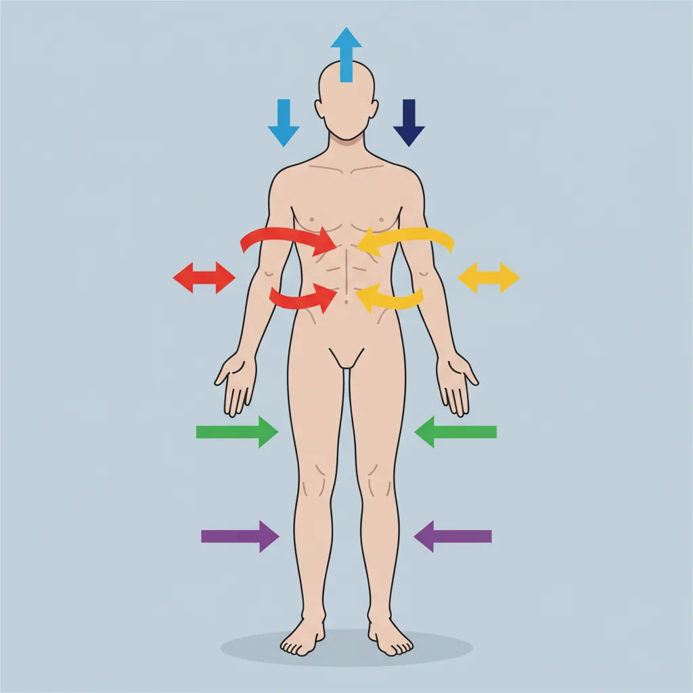
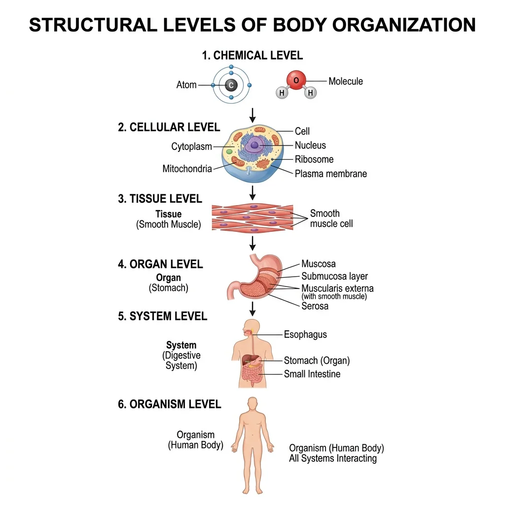
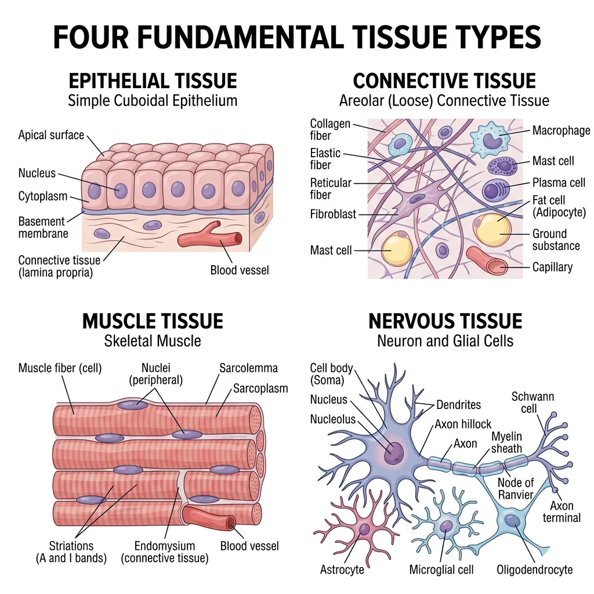
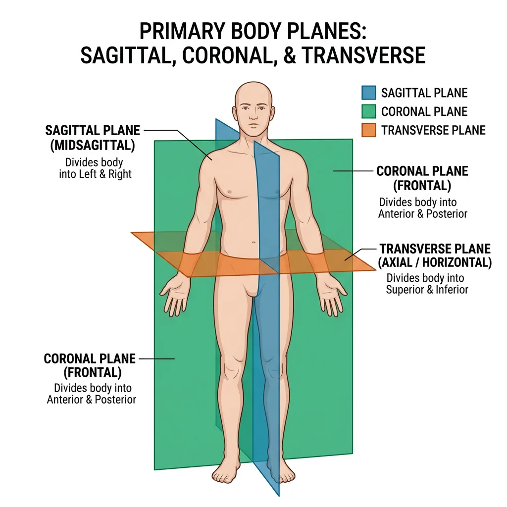
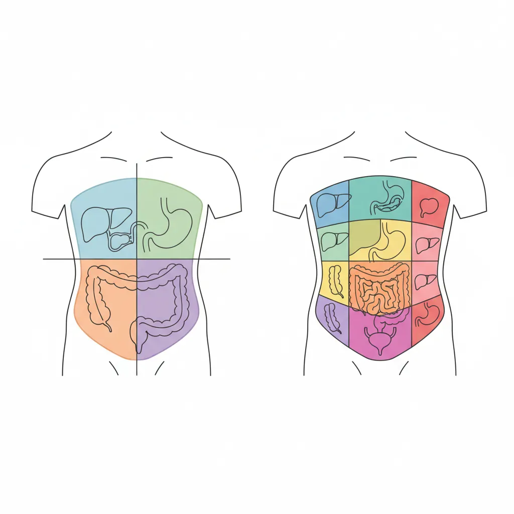

Human Anatomy Mastery
Anatomical Terminology & Body Planes
Directional terms, planes, cavities, tissuesSkeletal System & Joints
Osteology, axial & appendicular, arthrologyMuscular System & Movement
Muscle types, functional groups, biomechanicsCardiovascular & Lymphatic Anatomy
Heart, vessels, lymphatics, clinical linksNervous System & Neuroanatomy
CNS, PNS, autonomic, functional pathwaysVisceral Anatomy — Thorax & Abdomen
Thoracic & abdominal organs, peritoneumHead, Neck & Special Senses
Skull foramina, eye, ear, oral anatomySurface Anatomy & Clinical Imaging
Landmarks, X-ray, CT, MRI, proceduresHistology & Microscopic Anatomy
Cell ultrastructure, tissue & organ histologyEmbryology & Developmental Anatomy
Germ layers, organogenesis, malformationsFunctional & Applied Anatomy
Biomechanics, posture, gait, integrationRegional Dissection Mastery
Upper/lower limb, thorax, abdomen, pelvisFoundations
Before we can study any organ, muscle, or nerve, we need a shared language. Anatomical terminology is the universal vocabulary that allows healthcare professionals worldwide to describe the exact location of structures, the direction of movements, and the planes through which the body is viewed. Without it, a surgeon in Tokyo and a radiologist in London could mean entirely different things when discussing "the left side."

Anatomical Position
The anatomical position is the universal reference posture from which all directional terms are defined. A person in anatomical position stands:
- Upright (erect posture)
- Facing the observer directly
- Arms at the sides with palms facing forward (supinated)
- Feet flat on the floor, toes pointing forward
- Eyes looking straight ahead
This convention was standardized internationally so that whether a patient is lying down, standing on their head, or positioned for surgery, we always describe their anatomy as though they are in anatomical position. This eliminates ambiguity in clinical communication.
Vesalius & De Humani Corporis Fabrica
Andreas Vesalius (1514–1564), a Flemish anatomist, revolutionized the study of human anatomy by insisting on direct observation through cadaver dissection. His landmark 1543 publication, De Humani Corporis Fabrica ("On the Fabric of the Human Body"), contained over 200 anatomical illustrations drawn by artists from Titian's studio. Vesalius corrected over 200 errors from Galen, who had relied primarily on animal dissections. This work established the principle that anatomy must be studied from the human body itself, not from dogma — a principle that still drives anatomical science today.
Directional Terms
Directional terms always occur in opposing pairs. Each term describes a position or direction relative to another structure, assuming anatomical position:
| Term | Meaning | Opposite | Example |
|---|---|---|---|
| Superior (Cranial) | Toward the head / above | Inferior | The heart is superior to the diaphragm |
| Inferior (Caudal) | Toward the tail / below | Superior | The stomach is inferior to the lungs |
| Anterior (Ventral) | Toward the front | Posterior | The sternum is anterior to the heart |
| Posterior (Dorsal) | Toward the back | Anterior | The spine is posterior to the esophagus |
| Medial | Toward the midline | Lateral | The ulna is medial to the radius |
| Lateral | Away from the midline | Medial | The ears are lateral to the nose |
| Proximal | Closer to trunk/origin | Distal | The elbow is proximal to the wrist |
| Distal | Farther from trunk/origin | Proximal | The fingers are distal to the elbow |
| Superficial | Closer to the body surface | Deep | The skin is superficial to muscle |
| Deep | Farther from the body surface | Superficial | Bones are deep to muscles |
| Ipsilateral | On the same side | Contralateral | Right arm and right leg are ipsilateral |
| Contralateral | On the opposite side | Ipsilateral | Right arm and left leg are contralateral |
Body Planes
A body plane is an imaginary flat surface that divides the body into sections. Understanding planes is essential for interpreting medical imaging, planning surgical incisions, and describing the relationships between structures.
| Plane | Division | Clinical Use |
|---|---|---|
| Sagittal (Median) | Divides body into left and right halves | Brain MRI (midline structures); spinal cord imaging |
| Parasagittal | Divides into unequal left/right portions | Orbital imaging; kidney sections |
| Coronal (Frontal) | Divides body into anterior and posterior | Chest X-rays; brain imaging of lobes |
| Transverse (Axial) | Divides body into superior and inferior | CT scans (standard slice); abdominal imaging |
| Oblique | Diagonal cut at any angle | Echocardiography; specialized surgical views |
The median plane (midsagittal) is the exact midline sagittal plane dividing the body into perfectly equal left and right halves. Any sagittal plane that is offset from the midline is called a parasagittal plane.
Body Cavities & Membranes
The body protects its internal organs by housing them within enclosed body cavities lined by protective membranes. There are two major cavity groups:
Dorsal Body Cavity
Located along the posterior (back) surface of the body, this cavity has two subdivisions:
- Cranial cavity: Enclosed by the skull bones, contains the brain and its protective meninges.
- Vertebral (spinal) cavity: Formed by the vertebral column, houses the spinal cord.
Ventral Body Cavity
The larger anterior cavity is divided by the diaphragm into:
- Thoracic cavity: Contains the lungs (in pleural cavities), heart (in pericardial cavity), and the mediastinum (trachea, esophagus, great vessels).
- Abdominopelvic cavity: Contains the abdominal organs (stomach, liver, intestines, kidneys) and pelvic organs (bladder, reproductive organs, rectum).
Serous Membranes
Body cavities are lined by double-layered serous membranes that secrete a thin lubricating fluid to reduce friction during organ movement:
| Membrane | Lines / Covers | Fluid Produced |
|---|---|---|
| Pleura | Lungs (visceral) and chest wall (parietal) | Pleural fluid |
| Pericardium | Heart (visceral) and pericardial sac (parietal) | Pericardial fluid |
| Peritoneum | Abdominal organs (visceral) and abdominal wall (parietal) | Peritoneal fluid |
Structural Levels of Organization
The human body is organized in a hierarchy of increasing complexity. Understanding these levels helps you grasp how microscopic changes at the cellular level can produce macroscopic disease visible to the naked eye.

Chemical Level
At the most fundamental level, the body is composed of atoms — carbon, hydrogen, oxygen, nitrogen, calcium, and phosphorus make up about 99% of body mass. These atoms combine to form molecules such as water (H₂O), proteins, lipids, carbohydrates, and nucleic acids (DNA and RNA). Biochemical reactions at this level — enzyme catalysis, ATP generation, ion transport — drive every process in the body.
Watson, Crick & the Double Helix
In 1953, James Watson and Francis Crick proposed the double-helix model of DNA, building on X-ray crystallography data from Rosalind Franklin. This breakthrough revealed that the chemical level of organization carries the blueprint for every structure and function in the body. A single change at the chemical level — a point mutation in DNA — can alter a protein, disrupt tissue function, and manifest as a clinical disease like sickle cell anemia.
Cellular Level
The cell is the basic structural and functional unit of life. The average adult body contains approximately 37.2 trillion cells (Bianconi et al., 2013). Despite this immense number, all cells share common features: a plasma membrane, cytoplasm with organelles, and genetic material. However, cells are highly specialized — a neuron can extend over a meter in length to transmit electrical signals, while a red blood cell has discarded its nucleus to maximize oxygen-carrying capacity.
Key organelles include the nucleus (DNA storage and gene regulation), mitochondria (ATP production — the "powerhouses"), endoplasmic reticulum (protein and lipid synthesis), Golgi apparatus (packaging and secretion), and lysosomes (intracellular digestion). Each organelle is essential — lysosomal storage diseases like Tay-Sachs demonstrate what happens when a single organelle fails.
Tissue → Organ → System → Organism
Groups of similar cells working together form tissues. Different tissues combine to form organs — each organ contains at least two tissue types working in concert. Organs that cooperate in a shared function form organ systems (e.g., the digestive system includes the mouth, esophagus, stomach, intestines, liver, and pancreas). All 11 organ systems working together constitute the organism.
| Level | Example | Study Focus |
|---|---|---|
| Chemical | Water, collagen protein, calcium hydroxyapatite | Biochemistry |
| Cellular | Osteocyte (bone cell), neuron, erythrocyte | Cell Biology |
| Tissue | Osseous tissue, nervous tissue, epithelium | Histology |
| Organ | Heart, liver, femur | Gross Anatomy |
| Organ System | Cardiovascular, digestive, skeletal | Systems Physiology |
| Organism | The complete human being | Integrative Medicine |
Tissue Types
Every structure in the body — from your skin to your brain — is built from just four fundamental tissue types. Recognizing these tissues is the bridge between gross anatomy (what you see with the naked eye) and histology (what you see under the microscope). This section provides an essential preview; we explore tissue architecture in depth in Part 9: Histology & Microscopic Anatomy.

Marie François Xavier Bichat — Father of Histology
Bichat (1771–1802) identified 21 distinct tissue types in the human body — remarkably, without ever using a microscope. He relied on texture, color, and chemical properties assessed through boiling, drying, and acid exposure. His 1801 work Traité des Membranes established that diseases could be traced to specific tissue types rather than whole organs, laying the groundwork for cellular pathology developed later by Rudolf Virchow.
Epithelial Tissue
Epithelial tissue covers body surfaces, lines cavities, and forms glands. It sits on a basement membrane and is avascular (no direct blood supply — nutrients diffuse from underlying connective tissue). Classification is based on two criteria:
- Cell layers: Simple (one layer) vs. stratified (multiple layers) vs. pseudostratified (appears multi-layered but all cells touch the basement membrane).
- Cell shape: Squamous (flat), cuboidal (cube-shaped), or columnar (tall and column-like).
Key examples: Simple squamous lines blood vessels (endothelium) and alveoli; stratified squamous protects skin, mouth, and esophagus; simple columnar lines the intestines for absorption; transitional epithelium (urothelium) lines the bladder and stretches as it fills.
Connective Tissue
Connective tissue is the most abundant and diverse tissue type. Its hallmark is abundant extracellular matrix (ECM) — a combination of ground substance and protein fibers (collagen, elastin, reticular) secreted by resident cells. Connective tissue provides structural support, protection, transport, and energy storage.
Major subtypes:
- Loose (areolar): The "packing material" — surrounds organs and cushions vessels and nerves.
- Dense regular: Parallel collagen fibers for tensile strength — tendons and ligaments.
- Dense irregular: Multi-directional collagen — dermis of skin, organ capsules.
- Adipose: Fat storage and insulation.
- Cartilage: Hyaline (joints, trachea), elastic (ear, epiglottis), fibrocartilage (intervertebral discs).
- Bone (osseous): Mineralized matrix — the skeletal system (Part 2).
- Blood: Fluid connective tissue — cells (erythrocytes, leukocytes, platelets) suspended in plasma.
Muscle Tissue
Muscle tissue is specialized for contraction. Three types exist, each with distinct structure and function:
| Type | Appearance | Control | Location |
|---|---|---|---|
| Skeletal | Striated, multinucleated | Voluntary | Attached to bones; moves the skeleton |
| Cardiac | Striated, branching, intercalated discs | Involuntary | Heart wall (myocardium) |
| Smooth | Non-striated, spindle-shaped | Involuntary | Visceral walls (GI tract, blood vessels, uterus) |
We explore muscle anatomy in detail in Part 3: Muscular System & Movement.
Nervous Tissue
Nervous tissue is the communication network of the body, composed of two cell types:
- Neurons: The signaling cells — they generate and transmit electrical impulses (action potentials). A typical neuron has a cell body (soma), multiple dendrites (receive input), and a single axon (sends output). The longest neurons stretch from the spinal cord to the toes — over 1 meter.
- Neuroglia (glial cells): Supporting cells that outnumber neurons ~10:1. They insulate axons (Schwann cells, oligodendrocytes), maintain the blood-brain barrier (astrocytes), and clean up debris (microglia).
Full coverage of the nervous system appears in Part 5: Nervous System & Neuroanatomy.
Clinical Orientation Skills
Understanding anatomical terminology becomes truly powerful when applied to clinical practice. The ability to read anatomical labels on diagrams, interpret sectional anatomy, and orient yourself in medical images (CT, MRI, ultrasound) is what separates a textbook reader from a competent clinician.

Reading Anatomical Labels
Anatomical labels follow consistent conventions that make complex diagrams readable:
- Leader lines: Thin lines connect labels to specific structures. Follow the line to its exact termination point.
- Color coding: Arteries are traditionally red, veins blue, nerves yellow, and lymphatics green.
- Abbreviations: Standard abbreviations include a. (artery), v. (vein), n. (nerve), m. (muscle), lig. (ligament).
- Latin/Greek roots: Many terms derive from Latin (e.g., os = bone; cor = heart) or Greek (e.g., nephros = kidney; kardia = heart).
Understanding Sectional Anatomy
Modern imaging displays the body in cross-sections rather than whole views. To interpret these images, you must mentally reconstruct 3D anatomy from 2D slices:
- Transverse (axial) sections are the most common in CT scanning. Imagine looking at the patient from their feet upward — the anterior structures (nose, sternum, abdominal wall) appear at the top of the image.
- Sagittal sections are common in brain and spine MRI. The patient is viewed from the side — anterior is to the viewer's left by convention.
- Coronal sections are used to view anterior-to-posterior depth — useful for visualizing the relationship between lungs, diaphragm, and abdominal organs in a single slice.
The Visible Human Project (1994)
The U.S. National Library of Medicine created the Visible Human Project by cryosectioning a male cadaver (Joseph Paul Jernigan, 1993) into 1,871 transverse slices at 1 mm intervals and photographing each one. A female dataset followed in 1995. These datasets — the first complete, anatomically detailed, 3D representations of the human body — revolutionized anatomical education and surgical planning. Medical students could now scroll through the body slice by slice on a computer screen, correlating textbook anatomy with actual sectional images.
Orientation in Imaging (CT/MRI)
Medical images follow strict orientation conventions that every clinician must internalize:
| Imaging Convention | What You See |
|---|---|
| CT axial slices | Patient viewed from below (feet-first). Patient's right = your left. |
| MRI sagittal | Patient viewed from the side. Anterior (face) is typically to viewer's left. |
| MRI coronal | Patient viewed from the front. Mirrors anatomical position. |
| Chest X-ray (PA) | X-rays enter posterior, exit anterior. Patient's right = your left. |
| Ultrasound | Orientation depends on probe placement; screen marker indicates probe direction. |
Wilhelm Röntgen & the Discovery of X-rays (1895)
On November 8, 1895, German physicist Wilhelm Conrad Röntgen discovered a new type of electromagnetic radiation while experimenting with cathode ray tubes. He called them "X-rays" because their nature was unknown. He produced the first medical X-ray image — his wife Anna Bertha's hand, showing her bones and wedding ring — on December 22, 1895. Within weeks, X-rays were being used clinically worldwide. Röntgen received the first Nobel Prize in Physics in 1901 for this discovery, which created the entire field of diagnostic radiology and transformed anatomy from a discipline requiring dissection to one visible in living patients.
Abdominal Regions & Quadrants
Clinicians use two systems to describe the location of abdominal pain, organ positions, and surgical incisions:
| Quadrant System (4 regions) | Key Contents |
|---|---|
| Right Upper Quadrant (RUQ) | Liver, gallbladder, right kidney, duodenum |
| Left Upper Quadrant (LUQ) | Stomach, spleen, left kidney, pancreas tail |
| Right Lower Quadrant (RLQ) | Appendix, cecum, right ovary/spermatic cord |
| Left Lower Quadrant (LLQ) | Sigmoid colon, left ovary, descending colon |
The nine-region system provides greater precision: right/left hypochondriac, epigastric, right/left lumbar, umbilical, right/left iliac (inguinal), and hypogastric (suprapubic) regions. Clinicians use these when documenting physical examination findings — for example, "tenderness in the epigastric region" localizes pain more precisely than "upper abdomen."
Practice Exercises
Applied Example: Anatomical Reference Data
Anatomical terminology and body region mapping can be codified into structured data for clinical information systems, anatomy quiz generators, and digital anatomy atlases. Below is a standalone Python example that creates a directional terms reference dataset and visualizes the body plane concept:

import matplotlib.pyplot as plt
import matplotlib.patches as mpatches
# Directional terms reference dictionary
directional_terms = {
'Superior': {'opposite': 'Inferior', 'meaning': 'Toward the head',
'example': 'Heart is superior to diaphragm'},
'Inferior': {'opposite': 'Superior', 'meaning': 'Away from the head',
'example': 'Stomach is inferior to lungs'},
'Anterior': {'opposite': 'Posterior', 'meaning': 'Toward the front',
'example': 'Sternum is anterior to heart'},
'Posterior': {'opposite': 'Anterior', 'meaning': 'Toward the back',
'example': 'Spine is posterior to esophagus'},
'Medial': {'opposite': 'Lateral', 'meaning': 'Toward the midline',
'example': 'Ulna is medial to radius'},
'Lateral': {'opposite': 'Medial', 'meaning': 'Away from the midline',
'example': 'Ears are lateral to nose'},
}
# Print formatted reference table
print(f"{'Term':<12} {'Opposite':<12} {'Meaning':<25} {'Example'}")
print("-" * 75)
for term, info in directional_terms.items():
print(f"{term:<12} {info['opposite']:<12} {info['meaning']:<25} {info['example']}")
# Visualize the three primary body planes
fig, ax = plt.subplots(1, 1, figsize=(6, 8))
body = mpatches.FancyBboxPatch((2, 1), 2, 5, boxstyle="round,pad=0.3",
facecolor='#f0e6d3', edgecolor='#132440', linewidth=2)
ax.add_patch(body)
# Sagittal plane (vertical, left-right division)
ax.plot([3, 3], [0.5, 6.5], color='#BF092F', linewidth=2.5, linestyle='--',
label='Sagittal (median)')
# Coronal plane (vertical, front-back division)
ax.plot([1.5, 4.5], [3.5, 3.5], color='#16476A', linewidth=2.5, linestyle='-.',
label='Coronal (frontal)')
# Transverse plane (horizontal)
ax.plot([1.5, 4.5], [4.8, 4.8], color='#3B9797', linewidth=2.5, linestyle=':',
label='Transverse (axial)')
ax.set_xlim(0, 6)
ax.set_ylim(0, 7.5)
ax.set_aspect('equal')
ax.legend(loc='upper right', fontsize=9)
ax.set_title('Three Primary Body Planes', fontsize=14,
fontweight='bold', color='#132440')
ax.axis('off')
plt.tight_layout()
plt.show()Interactive Tool: Anatomical Terminology Worksheet
Use this interactive tool to practice anatomical terminology by documenting directional terms, body plane observations, and cavity contents for any body region. Download your worksheet as Word, Excel, or PDF for study review.
Anatomical Terminology Worksheet
Record directional term applications, body plane observations, and cavity contents. Download as Word, Excel, or PDF.
Conclusion & Next Steps
Anatomical terminology is the universal language of medicine. In this article, we've established the coordinate system of the human body — the anatomical position, directional terms, body planes, and body cavities. We've surveyed the structural hierarchy from atoms to the complete organism and previewed the four fundamental tissue types. Finally, we've practiced the clinical orientation skills needed to read anatomical diagrams and medical images.
These foundations form the bedrock upon which every subsequent topic builds. You'll use directional terms every time you describe a bone's surface marking, a muscle's origin, a nerve's pathway, or a tumor's location. With this vocabulary firmly established, you're ready to explore the body's structural framework.